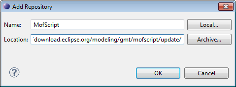

Before installing new Eclipse plugin, you need to install SWI-Prolog on your computer. The current version used is the 5.8.3. The next sections can be used only if you do not have a full complete eclipse with the Movida projects such as Movida studio. In this case simply open your Eclipse.
Open your Eclipse and go to Help -> Install New Software. Before adding the Movida studio update site we need to add the MofScript update site which is used by Praxis.
On the new wizard, click on Add and then fill name as MofScript and location as http://download.eclipse.org/modeling/gmt/mofscript/update/ as in the following figure :

Check MofScript on the next wizard, click on Newt on all the following wizards, accept the license and click on Finish. Then click on Restart Now.
When the Eclipse is started again, go again to Help -> Install New Software and click on Add. Name your new update site Movida update site and search the zipped update site movida_update-5.0.zip through the Archive button .
Check the features as in the following figure :

Click on Next on all of the following wizard, accept the license ansd click on Finish. You also need to restart your Eclipse.